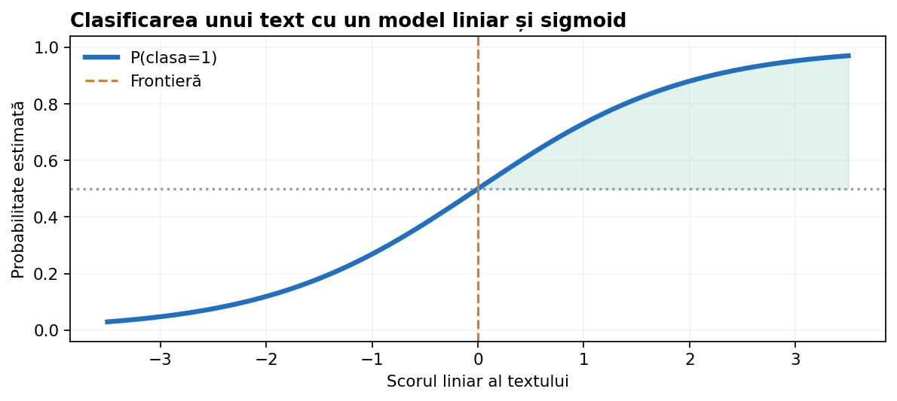
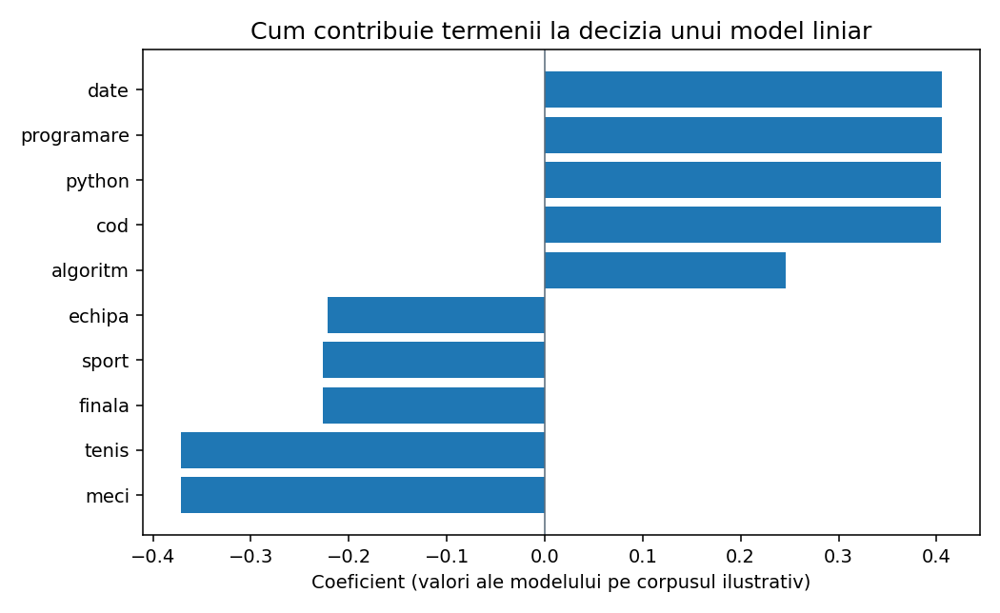
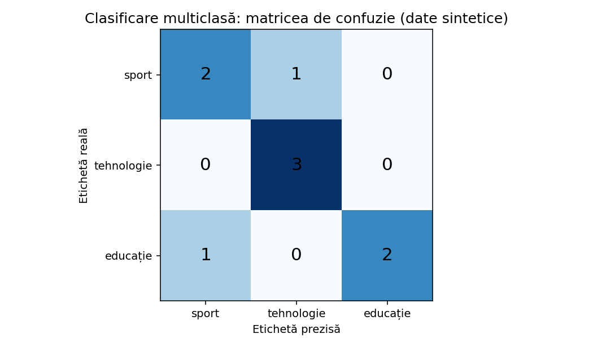
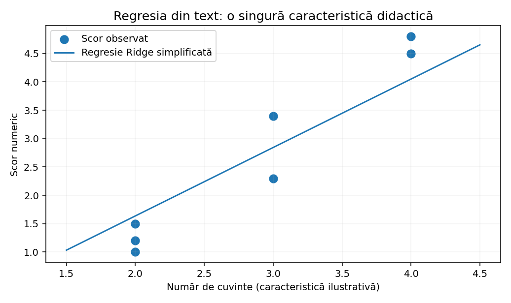

De la un document etichetat la un model care generalizează: Naive Bayes, regresie logistică, LinearSVC, SGDClassifier, clasificare multiclasă și multilabel, apoi regresie pentru scoruri numerice. Fiecare metodă este explicată pornind de la o problemă reală și este însoțită de implementări pas cu pas.
La final vei ști să identifici tipul sarcinii, să construiești un baseline fără data leakage, să compari modele prin validare corectă, să interpretezi parametrii lor și să folosești atât un clasificator, cât și un regresor de text.

În învățarea supervizată, avem documente și ținte cunoscute. Fiecare document poate fi o știre, o recenzie, un e-mail, enunțul unei probleme sau răspunsul unui elev. Nu prezicem „un text”, ci o proprietate a acestuia.
Exemplu: „Câștigătorul a marcat în minutul 90” poate primi eticheta sport. Pentru aceeași propoziție, alt proiect poate cere sentimentul, dificultatea lecturii sau identificarea entităților. Trebuie definite clar unitatea predicției, ținta și metrica înainte de alegerea modelului.
Țintă discretă: spam / legitim, una din 5 categorii, mai multe etichete simultan.
Țintă numerică: dificultate estimată, scor continuu de calitate, timp de rezolvare.
În clasificarea binară, exact două clase sunt posibile, de exemplu spam și legitim. În clasificarea multiclasă, fiecare document primește exact una dintre mai multe clase: sport, economie, știință. În clasificarea multilabel, același text poate primi simultan etichetele știință și educație. În regresie, predicția este un număr real, de exemplu 3,7 pe o scară de 1–5.
Diferența multilabel–multiclasă este decisivă. O știre despre folosirea inteligenței artificiale în școli poate aparține atât domeniului „IA”, cât și „educație”: a forța o singură etichetă înseamnă a defini greșit problema. Pentru scoruri discrete ordonate (1–5 stele), discutăm explicit alegerea între regresie, clasificare și metode ordinale.
„O descriere are două subiecte” înseamnă două etichete în cazul multilabel; „două opțiuni posibile, dar alegem una” înseamnă clasificare binară. Nu confundăm numărul claselor cu numărul de răspunsuri per document.
Începem cu documente etichetate și le împărțim în train/validation înainte să învățăm vocabularul. Un vectorizator (de exemplu TF-IDF) transformă textul în numere. Modelul învață din vectorii de train și produce predicții pentru validare. Alegem transformările și hiperparametrii folosind numai evaluarea permisă; pe testul final estimăm generalizarea, nu optimizăm în continuare.
Modelul clasic nu primește direct propoziția, ci un vector. CountVectorizer numără aparițiile termenilor. TfidfVectorizer dă importanță mai mare termenilor care disting documentele și poate normaliza vectorii. Pentru Naive Bayes, numărările sunt naturale; pentru modele liniare, TF-IDF cu normalizare L2 este adesea un punct de plecare puternic.
Când textele sunt scurte, cele mai importante indicii pot fi expresiile de două cuvinte, precum „nu recomand”. Încercăm ngram_range=(1,2) și comparăm cu unigrame. Când avem greșeli de tastare, variante flexionare și coduri scurte, testăm n-grame de caractere analyzer='char_wb'.
Atenție: min_df=3 înseamnă „păstrează cuvintele prezente în cel puțin trei documente de train”, nu „de cel puțin trei ori în același document”. Pe seturi didactice foarte mici folosim min_df=1.
Naive Bayes pornește de la probabilitatea unei clase și de la probabilitățile cuvintelor condiționate de clasă. Ipoteza „naive” presupune independența condiționată a caracteristicilor, lucru rar adevărat exact, dar suficient de util practic. Pentru o clasă c, MultinomialNB estimează cât de frecvent apare fiecare termen în documentele din clasa respectivă.
Un cuvânt care nu a apărut deloc într-o clasă ar primi probabilitate zero. Smoothingul Laplace adaugă o cantitate alpha fiecărei categorii din vocabular, astfel încât un termen necunoscut clasei să nu anuleze întregul produs de probabilități. În practică lucrăm cu log-probabilități pentru stabilitate numerică.
Dacă într-o clasă avem 8 apariții de termeni în total, vocabularul are 4 termeni și termenul „tenis” apare de 3 ori, atunci pentru α=1 obținem 4/12 = 0,333. Pentru termenul absent, obținem 1/12 = 0,083.
Construim vocabularul doar din documentele de antrenare. Pentru fiecare clasă calculăm de câte ori apare fiecare termen și câte tokenuri are clasa în total. Pentru un document nou, adunăm log-probabilitatea clasei cu log-probabilitățile termenilor cunoscuți. Alegem clasa cu scorul maxim.
De observat: un termen absent din vocabularul de antrenare nu primește automat propria coloană; în acest baseline simplu îl ignorăm. În proiecte reale putem trata vocabularul necunoscut printr-un mecanism dedicat, dar regula trebuie păstrată identic între train și test.
MultinomialNB utilizează frecvențe nenegative: numărul aparițiilor sau ponderi TF-IDF nenegative. Este rapid și bun pentru un baseline. BernoulliNB modelează prezența/absența unui termen; poate fi mai potrivit dacă numai existența unui indiciu contează, nu repetările. ComplementNB a fost conceput pentru a ameliora unele dificultăți ale clasificării pe texte dezechilibrate.
Pentru prima comparație, folosim același split și aceeași metrică. Încercăm alpha=0.1 și alpha=1.0; fit_prior=True învață distribuția claselor, iar fit_prior=False presupune priori uniformi. Nu ajustăm priorii după etichetele testului.
Verifică BernoulliNB cu caracteristici binare; prezența lui „excelent” poate conta mai mult decât frecvența.
Compară ComplementNB cu MultinomialNB; inspectează Macro-F1 și recall pe clasa rară, nu doar accuracy.
Un model liniar asociază fiecărui termen o pondere. Pentru un document, adună ponderile caracteristicilor prezente și un bias: z = w · x + b. În clasificarea binară, sigmoidul transformă scorul într-o valoare între 0 și 1. Scorul poate fi folosit pentru o probabilitate estimată a clasei pozitive; apoi un prag (adesea 0,5) decide eticheta.
Regresia logistică optimizează log-loss, nu MSE. Coeficienții mari și instabili sunt descurajați prin regularizare. În scikit-learn, C este inversul intensității regularizării: C mic înseamnă regularizare mai puternică. Dacă avem mii de termeni rari, regularizarea este foarte utilă.
Din punct de vedere matematic, pentru regresia logistică binară, diferența p-y este factorul esențial al gradientului. Într-un exemplu cu o singură caracteristică, folosim dw=(p-y)*x și db=p-y, apoi actualizăm w -= lr*dw, b -= lr*db. Repetăm pașii pentru toate exemplele, suficient de multe epoci.
Implementarea didactică este pentru înțelegerea actualizării, nu pentru a concura cu solverele optimizate din scikit-learn. În proiectele ONIA folosim de regulă LogisticRegression cu pipeline, iar această implementare ne ajută să înțelegem ce face antrenarea.

Un clasificator SVM liniar caută o frontieră de separare cu margine mare între clase. Față de regresia logistică, diferența principală este funcția de pierdere și interpretarea scorului. LinearSVC.decision_function oferă scoruri față de frontieră, nu probabilități. Dacă aplicația are nevoie de probabilități, putem încerca regresie logistică sau o metodă de calibrare evaluată corect.
În text, avem deseori zeci de mii de coloane sparse, multe aproape zero. LinearSVC este potrivit pentru astfel de spații. C mic regularizează mai puternic; class_weight='balanced' poate ajuta clasele rare, dar poate schimba compromisurile precision–recall.
SGDClassifier actualizează treptat coeficienții, folosind câte un exemplu sau mini-lot. Cu loss='log_loss' aproximează un clasificator logistic; cu loss='hinge' este un clasificator liniar de tip SVM. alpha controlează regularizarea; max_iter limitează epocile; tol influențează oprirea, iar random_state ajută reproducibilitatea.
Dacă datele apar în loturi, putem folosi partial_fit, dar trebuie să menținem același vocabular. De aceea un vectorizator cu hashing poate fi util în aplicații cu flux continuu de texte; TfidfVectorizer obișnuit învață vocabularul din corpus, deci nu este un transformator incremental complet.
Pentru clasificarea în sport / economie / tehnologie, un document primește o singură clasă. Naive Bayes și regresia logistică pot trata această sarcină direct, iar LinearSVC folosește implicit strategia One-vs-Rest. În OvR, antrenăm câte un clasificator binar „clasa C versus toate celelalte” și comparăm scorurile.
Pentru un concurs unde fiecare document aparține uneia din cinci categorii, principalul pericol este dezechilibrul. Macro-F1 dă aceeași importanță fiecărei clase, chiar dacă una apare mai rar. Nu optimizăm doar accuracy.
În multi-label, ieșirea este un vector binar: [1,0,1] poate însemna simultan „IA” și „educație”, dar nu „sport”. Folosim MultiLabelBinarizer pentru a transforma liste de etichete în matrici binare și OneVsRestClassifier pentru a antrena câte un model pentru fiecare etichetă.
Fiecare etichetă are propriul scor și poate avea propriul prag. Evaluarea este diferită: raportăm f1_score(..., average='micro'), average='macro' și uneori average='samples'. Atenție: accuracy_score în multilabel reprezintă subset accuracy — toate etichetele unui document trebuie prezise corect.
Nu toate problemele pe texte cer o categorie. Putem estima dificultatea unui enunț, un scor de lizibilitate sau durata aproximativă de rezolvare. Vectorizarea rămâne similară, dar folosim un regresor, de exemplu Ridge. Acesta minimizează suma erorilor pătratice și penalizează coeficienții mari prin regularizare L2.
Pentru o estimare de scor între 1 și 5, regresorul poate produce 5,4 sau 0,7 — nu respectă automat intervalul. Putem limita predicțiile după regulile sarcinii, dar evaluăm consecințele. Nu folosim F1 pentru regresie: preferăm MAE, RMSE și, dacă are sens, R².
Într-un corpus cu 95% mesaje legitime, modelul care răspunde mereu „legitim” are accuracy 95%, dar detectează zero mesaje spam. Aici urmărim precision, recall, F1 și matricea de confuzie pentru clasa rară. Putem compara class_weight='balanced', praguri alternative și o metrică precum average precision.
Pragul trebuie ales pe validare, nu pe test. În plus, un clasificator cu probabilități necalibrate poate ordona corect exemplele, dar nu poate fi interpretat direct ca probabilitate reală de 80%.
Recenzii cu negații: comparăm ngram_range=(1,1) cu (1,2), păstrăm stopwords care conțin „nu” și testăm regresia logistică cu C între 0,1 și 10. Mesaje cu greșeli: testăm analyzer='char_wb' și n-grame de 3–5 caractere cu LinearSVC. Corpus mic: alegem min_df=1 și regularizare mai puternică. Clasă rară: comparăm class_weight='balanced' cu varianta standard.
Folosim GridSearchCV pe un pipeline complet, cu scoring='f1_macro' pentru multiclasă dezechilibrată, de exemplu. cv reprezintă numărul de împărțiri, iar numărul de clase și observații trebuie să permită stratificarea. Pentru puține exemple, nu alegem automat cv=5 dacă o clasă are doar trei exemple.

După primul model, nu ne mulțumim cu un singur scor. Extragem toate documentele greșit clasificate și analizăm ce au în comun: negație, domenii amestecate, cuvinte rare, etichete ambigue, documente duplicate sau prea scurte. Pentru un model liniar, coeficienții pentru termeni pot oferi indicii despre decizie, dar nu reprezintă o explicație cauzală completă.
Inspectăm separat exemplele din clasa cu F1 cel mai mic, nu doar pe cele cu cel mai mare scor de încredere. Apoi schimbăm o singură variabilă importantă și reevaluăm pe aceeași validare.
Un leak apare dacă învățăm vocabularul TF-IDF din toate documentele înainte să separăm train și validation. Chiar fără etichete, IDF-ul din validation furnizează informații despre distribuția de test. De aceea construim Pipeline([('tfidf', ...), ('clf', ...)]) și facem cross_val_score direct pe texte.
La competiții, aceeași problemă poate avea enunțuri similare sau versiuni publicate în mai multe surse. Împărțirea aleatoare pe rânduri poate supraestima performanța. Dacă există problem_id, author_id sau un grup semantic, analizăm GroupKFold ori un holdout pe grupuri.
În problema „Legenda lui Algorel” (ONIA 266), obiectivul este clasificarea problemelor Codeforces în cinci categorii algoritmice. Acesta este un exemplu de clasificare multiclasă, nu clustering, iar competiția folosește Macro-F1. Câmpuri precum title, description și statement pot conține semnale diferite.
Un baseline rezonabil combină câmpurile text într-o singură descriere, învață TF-IDF din train și compară LogisticRegression cu LinearSVC. O extensie poate adăuga caracteristici numerice din metadate, dacă regulamentul și datele o permit. Orice rezultat de validare prezentat în lecție este pe date demonstrative, nu reprezintă scor oficial pentru problema ONIA.

Imaginează-ți un set de probleme cu textul enunțului și o estimare numerică a dificultății. Un pipeline TfidfVectorizer + Ridge poate oferi un baseline. Testăm alpha din Ridge: valori mai mari înseamnă regularizare mai puternică, utilă când setul este mic și vocabularul mare. Comparăm MAE și RMSE pe probleme noi.
Limita principală este că dificultatea depinde și de structura logică, constrângeri și cunoștințe algoritmice, nu doar de cuvinte. Un scor estimat poate fi util pentru prioritizarea manuală a materialelor, nu pentru a atribui automat un grad de dificultate „adevărat”.
Un proces de lucru eficient poate începe cu trei baseline-uri: CountVectorizer + MultinomialNB pentru viteză, TfidfVectorizer + LogisticRegression pentru probabilități și TfidfVectorizer + LinearSVC pentru text sparse de dimensiune mare. Apoi alegem pe baza metricii și a analizei de erori.
Nu există un câștigător universal. Pentru predicții probabilistice, clasificatorul logistic este comod; pentru corpus foarte mare, SGD poate economisi memorie și timp; pentru scor numeric, Ridge este un baseline natural. Dăm întâietate validării corecte în locul complexității.
Fiecare exemplu este independent: îl poți copia într-un fișier Python sau într-o celulă Jupyter. Pentru exemplele cu scikit-learn instalează scikit-learn. Datele sunt intenționat mici și sintetice: valorile afișate sunt pentru înțelegerea API-ului, nu performanțe validate.
Un exemplu în care fiecare document are exact o etichetă. Este clasificare multiclasă.
texte = ["sport fotbal meci", "algoritm python cod", "știre despre educație"] etichete = ["sport", "tehnologie", "educație"] for i, (text, eticheta) in enumerate(zip(texte, etichete), start=1): print(i, "|", eticheta, "|", text)
Fiecare linie este un document, fiecare coloană este un termen. Multe valori sunt zero.
from collections import Counter texte = ["tenis sport meci", "sport fotbal stadion", "python cod algoritm"] vocabular = sorted(set(" ".join(texte).split())) print("Vocabular:", vocabular) for text in texte: frecv = Counter(text.split()) print([frecv[cuvant] for cuvant in vocabular])
Se pot verifica manual priorii, numărătorile și efectul lui alpha.
from collections import Counter, defaultdict from math import log texte = ["sport tenis", "sport fotbal", "python algoritm", "cod python"] y = ["sport", "sport", "tech", "tech"] clase = sorted(set(y)) vocab = set(" ".join(texte).split()) numere = {c: Counter() for c in clase} totaluri = {c: 0 for c in clase} prior = Counter(y) for text, clasa in zip(texte, y): cuvinte = text.split() numere[clasa].update(cuvinte) totaluri[clasa] += len(cuvinte) alpha = 1.0 nou = "tenis sport" scoruri = {} for clasa in clase: scor = log(prior[clasa] / len(y)) for cuvant in nou.split(): if cuvant in vocab: p = (numere[clasa][cuvant] + alpha) / (totaluri[clasa] + alpha * len(vocab)) scor += log(p) scoruri[clasa] = scor print("Scoruri log:", {c: round(v, 3) for c,v in scoruri.items()}) print("Predicție:", max(scoruri, key=scoruri.get))
Termenul absent primește probabilitate nenulă pentru alpha pozitiv.
numar_termen = 0 numar_total = 8 vocab = 4 for alpha in (0.1, 0.5, 1.0, 2.0): p = (numar_termen + alpha) / (numar_total + alpha * vocab) print(f"alpha={alpha:<4} P={p:.4f}")
Comparăm aceleași texte cu modele care pun accent pe numărări versus prezență.
from sklearn.pipeline import make_pipeline from sklearn.feature_extraction.text import CountVectorizer from sklearn.naive_bayes import MultinomialNB, BernoulliNB X = ["tenis sport", "sport meci", "fotbal sport", "python cod", "cod algoritm", "date python"] y = [0, 0, 0, 1, 1, 1] for model in (MultinomialNB(alpha=1.0), BernoulliNB(alpha=1.0)): pipe = make_pipeline(CountVectorizer(binary=isinstance(model, BernoulliNB)), model) pipe.fit(X, y) print(type(model).__name__, pipe.predict(["sport tenis", "algoritm python"]))
Experiment didactic: nu interpretează ca rezultat validat pe clasa rară.
from sklearn.pipeline import make_pipeline from sklearn.feature_extraction.text import TfidfVectorizer from sklearn.naive_bayes import ComplementNB X = ["meci sport", "sport stadion", "sport fotbal", "tenis sport", "sport echipă", "python algoritm", "algoritm cod"] y = ["sport"] * 5 + ["tech"] * 2 model = make_pipeline(TfidfVectorizer(), ComplementNB(alpha=0.5)) model.fit(X, y) print(model.predict(["cod algoritm", "sport meci"]))
Vezi cum modelul crește probabilitatea clasei pozitive pentru un exemplu pozitiv.
from math import exp x, y = 2.0, 1.0 w, b, lr = 0.0, 0.0, 0.1 for pas in range(5): z = w*x + b p = 1 / (1 + exp(-z)) dw, db = (p - y)*x, (p - y) print(pas, f"p={p:.3f} dw={dw:.3f} db={db:.3f}") w -= lr*dw b -= lr*db
C este invers legat de intensitatea regularizării. Probabilitățile sunt estimări, nu garanții.
from sklearn.pipeline import make_pipeline from sklearn.feature_extraction.text import TfidfVectorizer from sklearn.linear_model import LogisticRegression X = ["sport tenis", "meci fotbal", "echipa stadion", "python cod", "algoritm date", "programare python"] y = ["sport"]*3 + ["tech"]*3 model = make_pipeline(TfidfVectorizer(ngram_range=(1, 2)), LogisticRegression(C=1.0, max_iter=1000)) model.fit(X, y) print("Clase:", model[-1].classes_) print("Probabilități:", model.predict_proba(["tenis stadion"]).round(3))
decision_function nu produce probabilitate.
from sklearn.pipeline import Pipeline from sklearn.feature_extraction.text import TfidfVectorizer from sklearn.svm import LinearSVC X = ["tenis sport", "fotbal stadion", "finala echipă", "cod python", "algoritm recursiv", "date programare"] y = ["sport"]*3 + ["tech"]*3 model = Pipeline([("tfidf", TfidfVectorizer()), ("svc", LinearSVC(C=0.5, random_state=0))]) model.fit(X, y) print("Predicție:", model.predict(["meci tenis"])) print("Scor față de frontieră:", model.decision_function(["meci tenis"]))
Datele sunt foarte mici; scopul este folosirea corectă a aceluiași split, nu un clasament al algoritmilor.
from sklearn.model_selection import train_test_split from sklearn.pipeline import make_pipeline from sklearn.feature_extraction.text import TfidfVectorizer from sklearn.naive_bayes import MultinomialNB from sklearn.svm import LinearSVC from sklearn.metrics import f1_score X = ["tenis sport", "fotbal sport", "meci stadion", "gol echipă", "python cod", "algoritm date", "programare cod", "baze de date"] y = ["sport"]*4 + ["tech"]*4 xt, xv, yt, yv = train_test_split(X, y, test_size=0.5, random_state=2, stratify=y) for estimator in (MultinomialNB(alpha=1.0), LinearSVC(C=1.0)): model = make_pipeline(TfidfVectorizer(), estimator) model.fit(xt, yt) pred = model.predict(xv) print(type(estimator).__name__, f1_score(yv, pred, average="macro", zero_division=0))
Un document primește o singură clasă dintre cele trei.
from sklearn.pipeline import make_pipeline from sklearn.feature_extraction.text import TfidfVectorizer from sklearn.linear_model import LogisticRegression X = ["tenis meci sport", "fotbal sport echipă", "programare python cod", "cod algoritm date", "educație școală elevi", "profesor elevi manual"] y = ["sport", "sport", "tech", "tech", "educație", "educație"] m = make_pipeline(TfidfVectorizer(), LogisticRegression(max_iter=1000)) m.fit(X, y) print(m.predict(["meci de fotbal", "lecție pentru elevi"])) print(m[-1].classes_)
Etichetele multilabel sunt o matrice binară, nu un singur șir.
from sklearn.preprocessing import MultiLabelBinarizer from sklearn.multiclass import OneVsRestClassifier from sklearn.linear_model import LogisticRegression from sklearn.feature_extraction.text import TfidfVectorizer from sklearn.pipeline import Pipeline X = ["model inteligenta artificiala", "elev scoala invatare", "ai la scoala", "meci fotbal", "algoritm ai", "manual scoala"] y = [["IA"], ["educatie"], ["IA", "educatie"], ["sport"], ["IA"], ["educatie"]] mlb = MultiLabelBinarizer() Y = mlb.fit_transform(y) pipe = Pipeline([("tfidf", TfidfVectorizer()), ("clf", OneVsRestClassifier(LogisticRegression(max_iter=1000)))]) pipe.fit(X, Y) print("Etichete:", mlb.classes_) print("Predicție:", mlb.inverse_transform(pipe.predict(["ai pentru scoala"])))
from sklearn.pipeline import make_pipeline from sklearn.feature_extraction.text import TfidfVectorizer from sklearn.linear_model import Ridge X = ["problema simpla suma", "sir simplu", "cautare element", "graf drum minim", "programare dinamica complexa", "arbore segment interval"] y = [1.0, 1.4, 2.0, 4.0, 4.7, 4.2] m = make_pipeline(TfidfVectorizer(), Ridge(alpha=1.0)) m.fit(X, y) print("Dificultate estimată:", m.predict(["drum minim in graf"]).round(2))
RMSE penalizează mai puternic erorile mari.
from math import sqrt real = [2, 3, 4, 5] pred = [2.2, 2.5, 4.3, 4.6] mae = sum(abs(a-b) for a,b in zip(real, pred)) / len(real) rmse = sqrt(sum((a-b)**2 for a,b in zip(real, pred)) / len(real)) print(f"MAE={mae:.3f} RMSE={rmse:.3f}")
loss schimbă obiectivul optimizării; alpha regularizează.
from sklearn.pipeline import make_pipeline from sklearn.feature_extraction.text import TfidfVectorizer from sklearn.linear_model import SGDClassifier X = ["sport fotbal", "tenis sport", "echipă meci", "python cod", "cod algoritm", "date python"] y = [0, 0, 0, 1, 1, 1] for loss in ("hinge", "log_loss"): m = make_pipeline(TfidfVectorizer(), SGDClassifier(loss=loss, alpha=0.001, random_state=4, max_iter=2000)) m.fit(X, y) print(loss, m.predict(["meci tenis"]))
Vectorizarea se învață separat în fiecare fold, nu o singură dată pe tot corpusul.
from sklearn.pipeline import Pipeline from sklearn.feature_extraction.text import TfidfVectorizer from sklearn.linear_model import LogisticRegression from sklearn.model_selection import GridSearchCV, StratifiedKFold X = ["tenis sport", "sport meci", "stadion fotbal", "fotbal echipă", "tenis finală", "echipă sport", "python cod", "algoritm date", "cod recursiv", "python liste", "algoritm graf", "programare date"] y = ["sport"]*6 + ["tech"]*6 pipe = Pipeline([("tfidf", TfidfVectorizer()), ("clf", LogisticRegression(max_iter=1000))]) parametri = {"tfidf__ngram_range": [(1, 1), (1, 2)], "clf__C": [0.1, 1.0, 10.0]} cv = StratifiedKFold(n_splits=3, shuffle=True, random_state=42) search = GridSearchCV(pipe, parametri, cv=cv, scoring="f1_macro") search.fit(X, y) print(search.best_params_) print("CV macro-F1:", round(search.best_score_, 3))
Coeficienții sunt descriptivi pentru modelul antrenat, nu cauze ale etichetelor.
from sklearn.pipeline import make_pipeline from sklearn.feature_extraction.text import TfidfVectorizer from sklearn.linear_model import LogisticRegression X = ["tenis meci sport", "echipă sport stadion", "finala fotbal sport", "python cod algoritm", "algoritm date python", "programare cod date"] y = ["sport"]*3 + ["tech"]*3 m = make_pipeline(TfidfVectorizer(), LogisticRegression(max_iter=1000)) m.fit(X, y) term = m[0].get_feature_names_out() coef = m[1].coef_[0] print("Clasa pozitivă:", m[1].classes_[1]) print([(term[i], round(float(coef[i]), 3)) for i in coef.argsort()[-4:][::-1]])
Matricea se interpretează pe clase, nu numai prin diagonală.
from sklearn.metrics import confusion_matrix, classification_report, f1_score real = ["sport", "sport", "tech", "tech", "educatie", "educatie"] pred = ["sport", "tech", "tech", "tech", "sport", "educatie"] clase = ["sport", "tech", "educatie"] print(confusion_matrix(real, pred, labels=clase)) print("Macro-F1:", round(f1_score(real, pred, average="macro"), 3)) print(classification_report(real, pred, labels=clase, zero_division=0))
Versiunile aceleiași probleme nu apar simultan în train și validation.
from sklearn.model_selection import GroupKFold texte = ["var A sport", "var B sport", "date python", "cod python", "meci final", "sport final"] y = ["sport", "sport", "tech", "tech", "sport", "sport"] grupuri = ["problema1", "problema1", "problema2", "problema2", "problema3", "problema3"] cv = GroupKFold(n_splits=3) for train, val in cv.split(texte, y, groups=grupuri): print("Grupuri train:", set(grupuri[i] for i in train), "| validation:", set(grupuri[i] for i in val))
Date complet sintetice: verifică formatul exact cerut de concurs înaintea unei trimiteri.
import csv from sklearn.pipeline import make_pipeline from sklearn.feature_extraction.text import TfidfVectorizer from sklearn.svm import LinearSVC texte_train = ["graf drum", "arbore parcurgere", "numar prim divizor", "factorizare prime", "sir palindrom", "subsir text", "puncte geometrie", "arie triunghi", "programare dinamica", "subproblema dp"] y_train = ["graphs"]*2 + ["number theory"]*2 + ["strings"]*2 + ["geometry"]*2 + ["dp"]*2 m = make_pipeline(TfidfVectorizer(ngram_range=(1, 2)), LinearSVC(C=1.0)) m.fit(texte_train, y_train) id_test = [101, 102] text_test = ["drum intre noduri", "sir caractere"] predictii = m.predict(text_test) with open("predictii_demo.csv", "w", newline="", encoding="utf-8") as f: w = csv.writer(f) w.writerow(["id", "label"]) w.writerows(zip(id_test, predictii)) print(list(zip(id_test, predictii)))
CountVectorizer + MultinomialNB, apoi TF-IDF + LogisticRegression. Verifică precision/recall.
TF-IDF + LinearSVC sau LogisticRegression. Măsoară Macro-F1 și matricea de confuzie.
TF-IDF + OneVsRestClassifier. Alege pragurile și metricile multilabel pe validare.
TF-IDF + Ridge. Evaluează MAE și RMSE, nu F1.
Naive Bayes · Modele liniare · Multiclasă și multilabel · Cross-validation. Pentru fiecare competiție, consultă și enunțul oficial, structura fișierelor și metrica exactă.